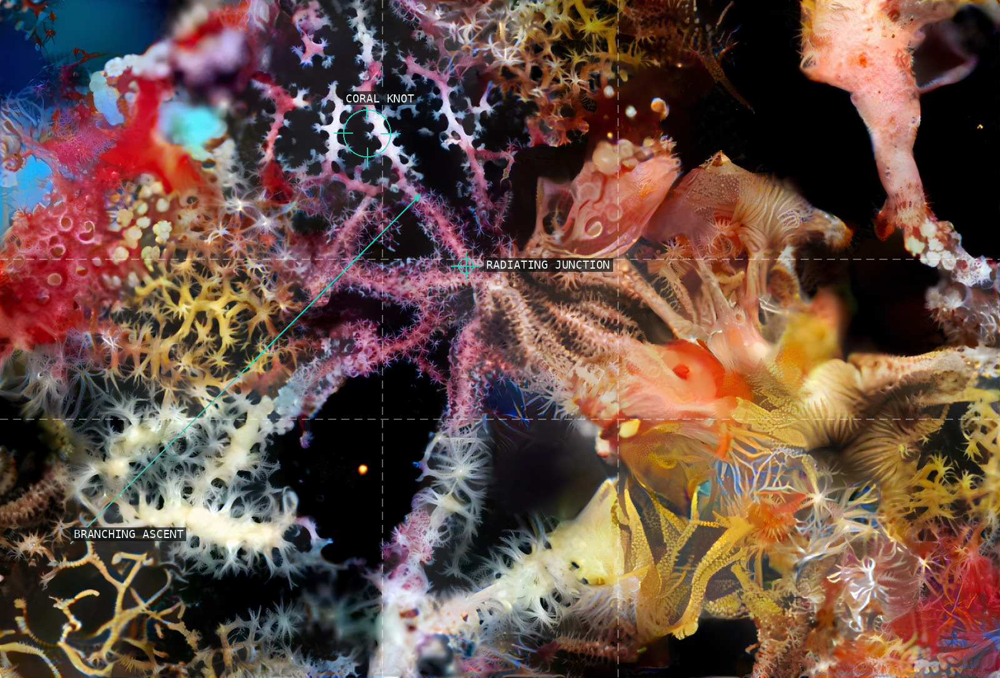
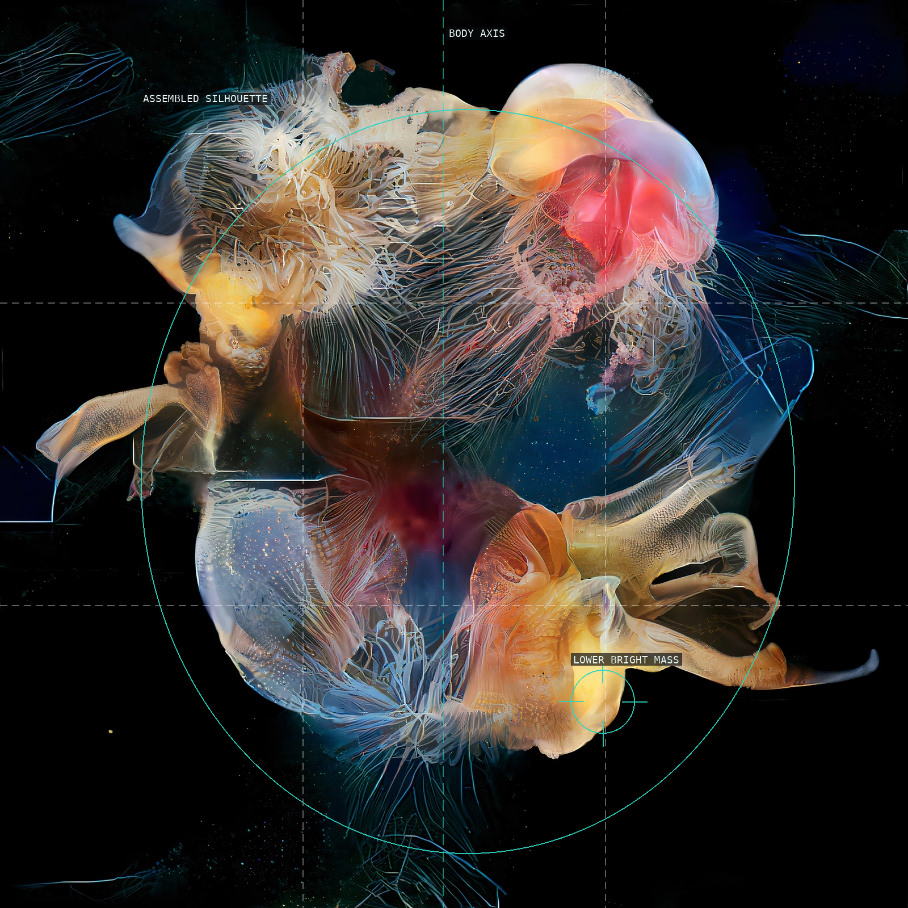
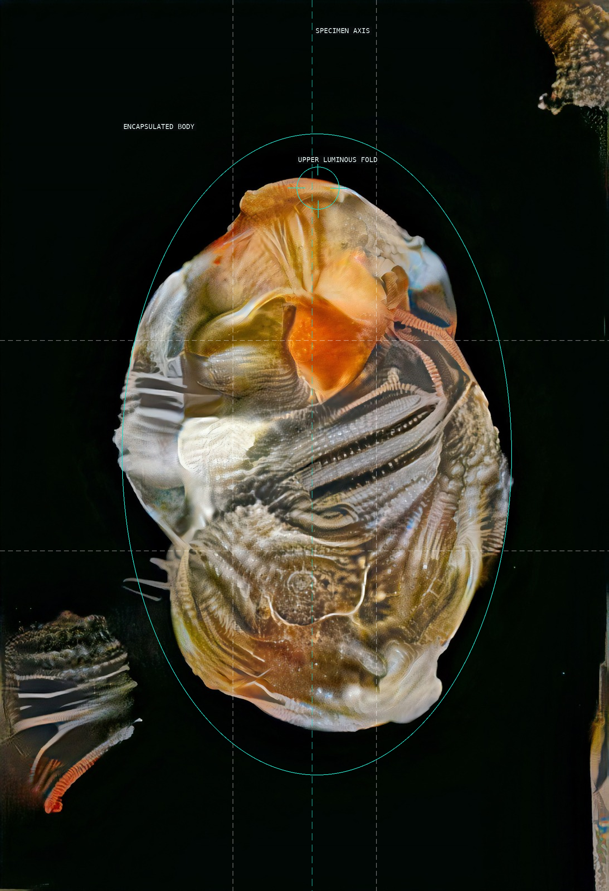
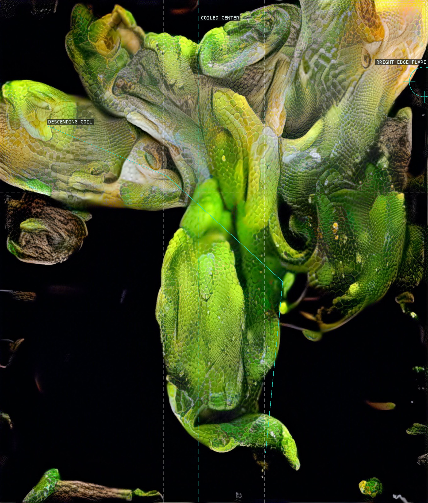
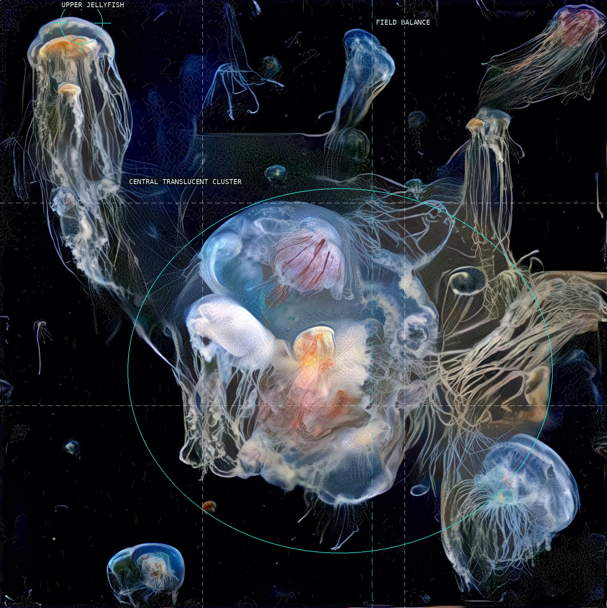
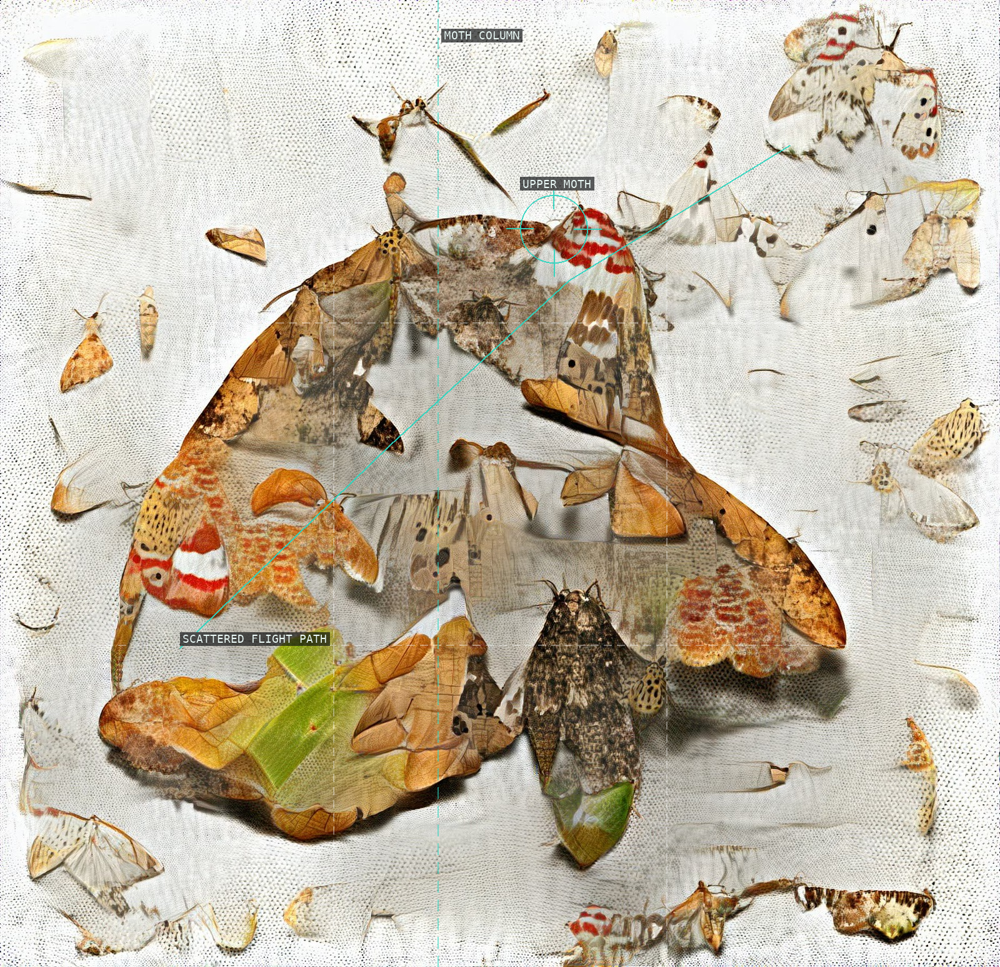
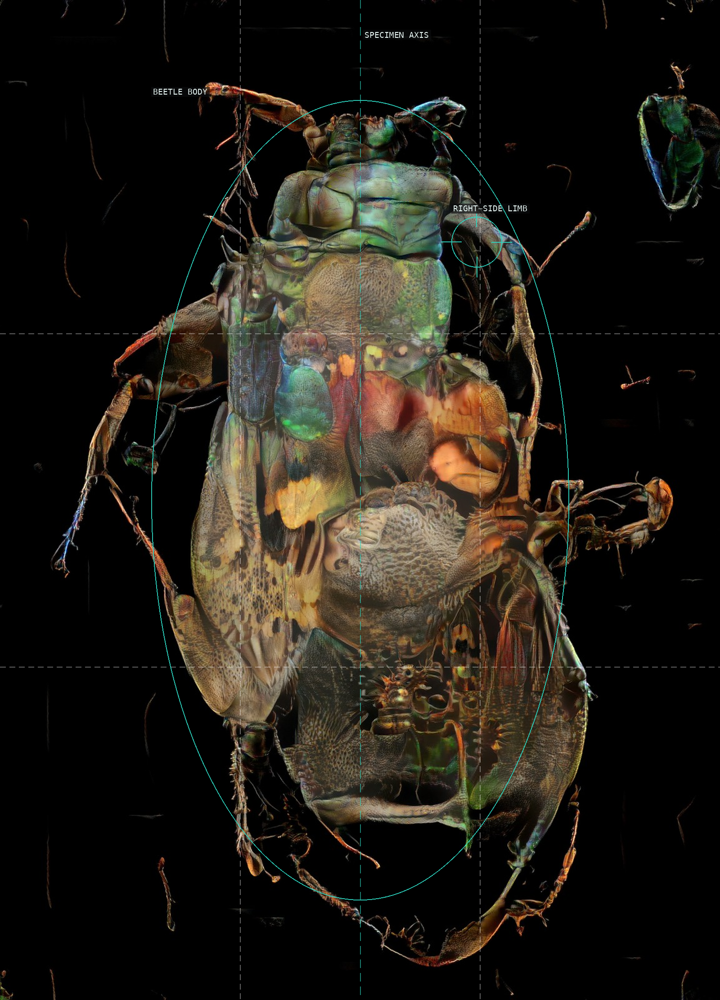
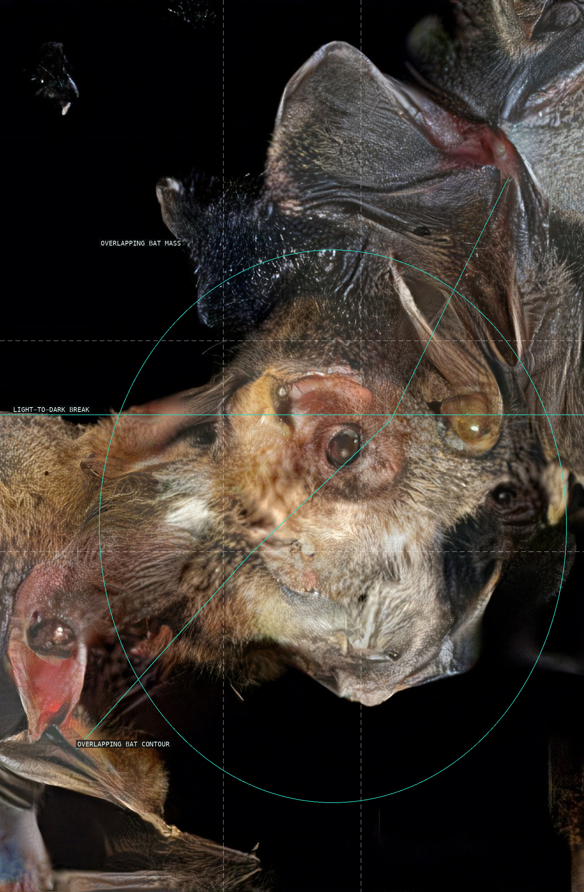
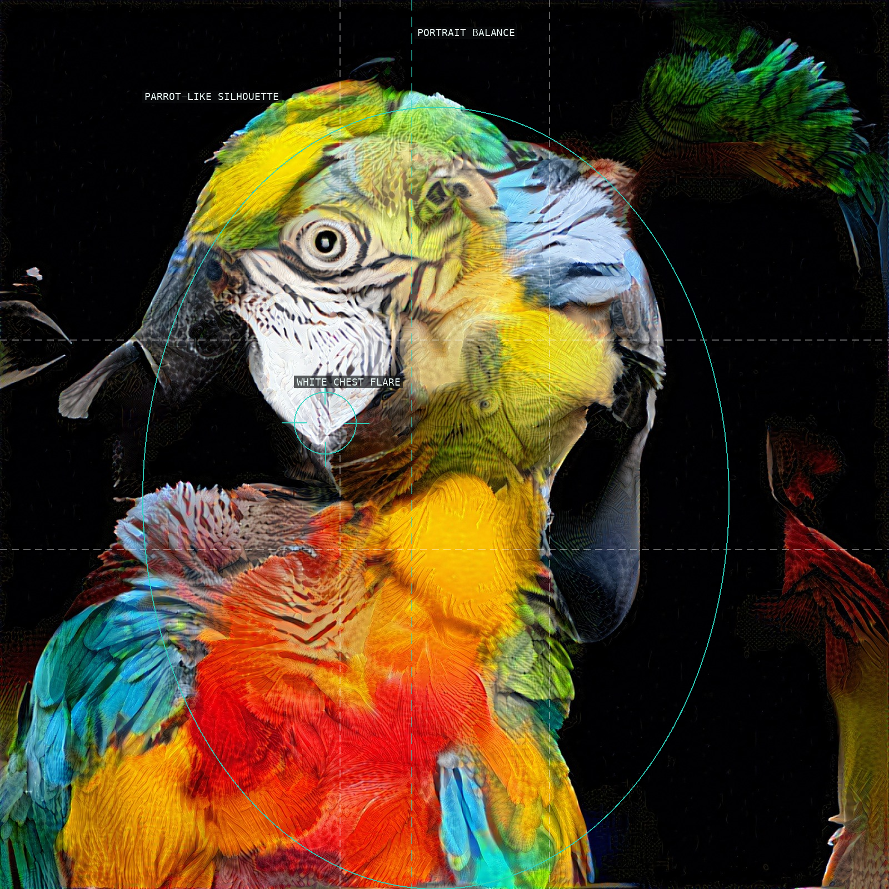
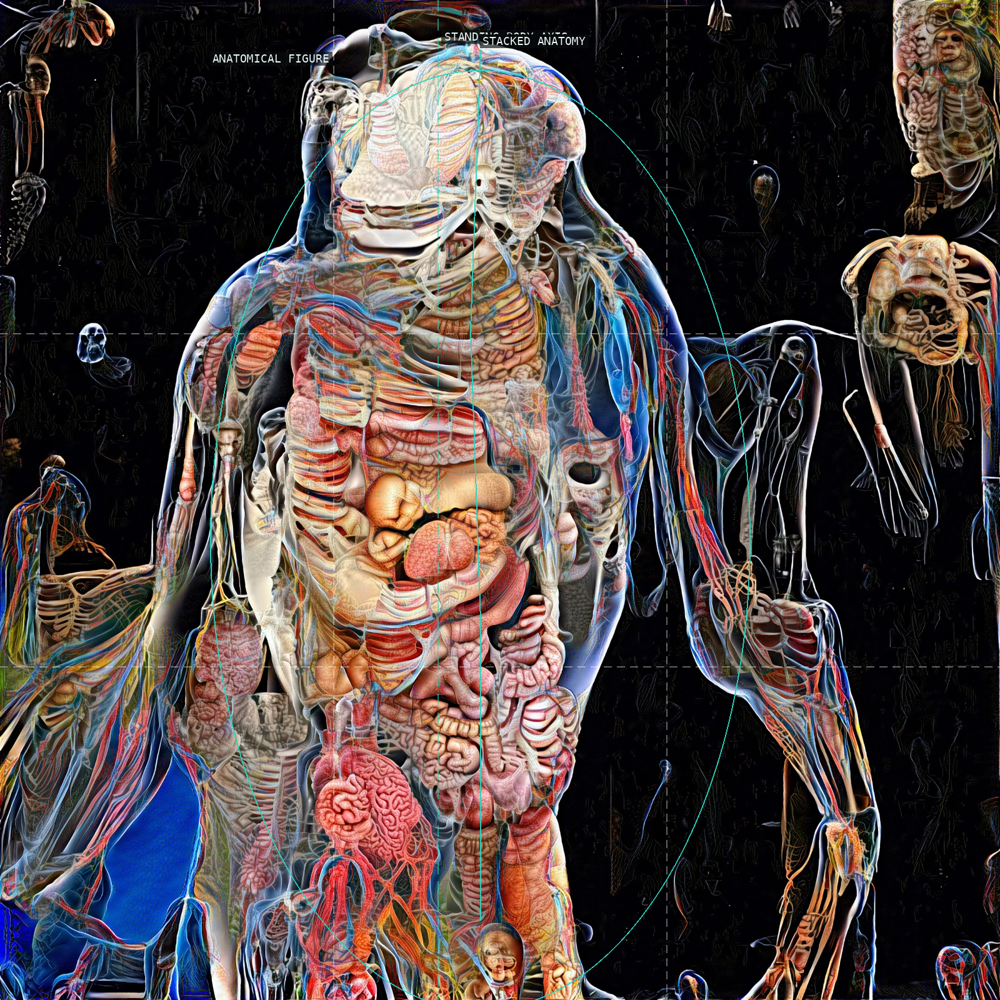

/* sofia-crespo - proofs */
10 plates. Deterministic overlays rendered by the composition-analysis skill.

01-opening-the-oceans-heart
Coral branches rise into a bright knot.

02-assemblage
A translucent aggregate holds a loose central silhouette.

03-the-lovers
An encapsulated form is held in a tall black field.

04-courage
A descending green coil is interrupted by a bright edge flare.

05-soft-sea-of-awareness
Jellyfish distribute attention around a translucent central cluster.

06-delicate-orchestration
Scattered moths make a loose column across a bright ground.

07-bug
A specimen axis holds a beetle-like aggregate.

08-taboo
Overlapping bat forms press into an otherwise black frame.

09-realisation
A parrot-like portrait breaks into competing feather planes.

10-free-will
A central anatomical figure becomes a crowded taxonomy.